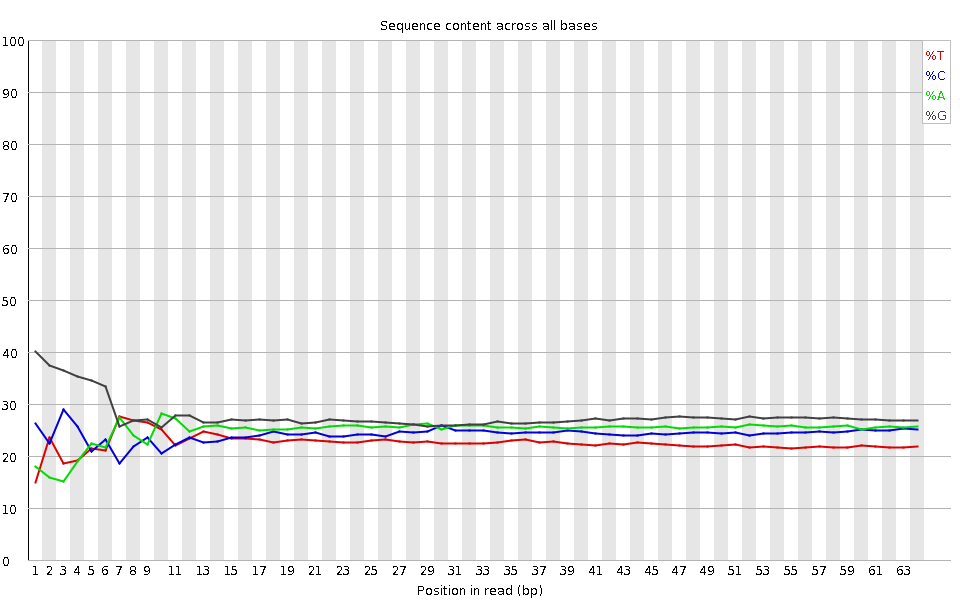
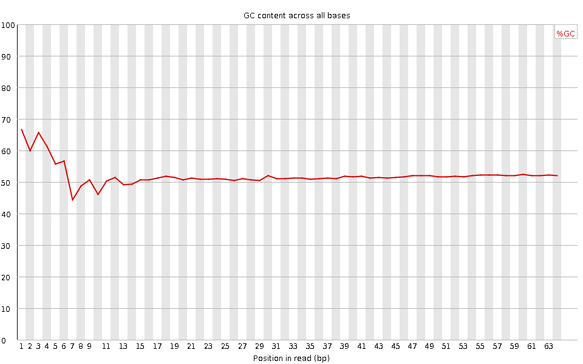
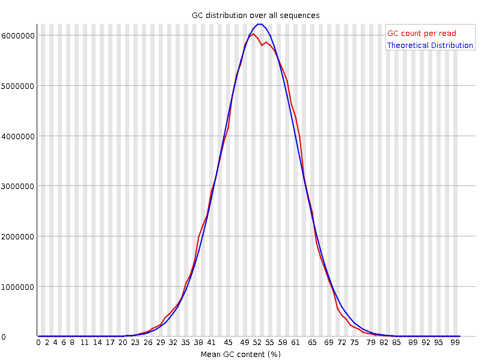
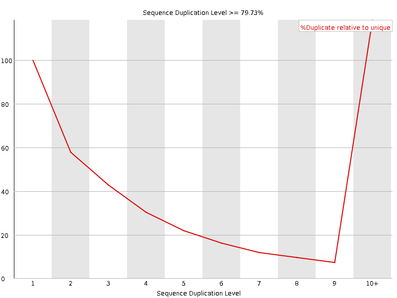
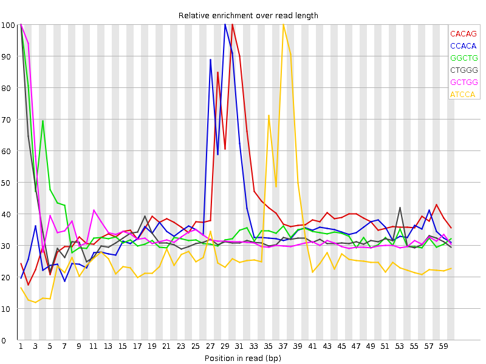

![[OK]](Icons/tick.png) Basic Statistics
Basic Statistics
| Measure | Value |
|---|---|
| Filename | SRR317049_pe_1.f.fastq |
| File type | Conventional base calls |
| Encoding | Sanger / Illumina 1.9 |
| Total Sequences | 89965132 |
| Filtered Sequences | 0 |
| Sequence length | 64 |
| %GC | 52 |
Per base sequence quality

Per sequence quality scores

![[FAIL]](Icons/error.png) Per base sequence content
Per base sequence content

Per base GC content

Per sequence GC content

Per base N content

Sequence Length Distribution

Sequence Duplication Levels

![[WARN]](Icons/warning.png) Overrepresented sequences
Overrepresented sequences
| Sequence | Count | Percentage | Possible Source |
|---|---|---|---|
| CCGTCGGCATGTATTAGCTCTAGAATTACCACAGTTATCCAAGTAGGAGAGGAGCGAGCGACCA | 232007 | 0.257885466115917 | No Hit |
| CCCGTCGGCATGTATTAGCTCTAGAATTACCACAGTTATCCAAGTAGGAGAGGAGCGAGCGACC | 199099 | 0.2213068503028484 | No Hit |
| GTCGGCATGTATTAGCTCTAGAATTACCACAGTTATCCAAGTAGGAGAGGAGCGAGCGACCAAA | 191777 | 0.21316814163069311 | No Hit |
Kmer Content

| Sequence | Count | Obs/Exp Overall | Obs/Exp Max | Max Obs/Exp Position |
|---|---|---|---|---|
| CACAG | 12315295 | 2.1876874 | 5.5885677 | 30 |
| CCACA | 9840970 | 2.0031676 | 5.5465174 | 29 |
| GGCTG | 12453040 | 1.929996 | 5.446328 | 1 |
| CTGGG | 12116625 | 1.8778578 | 5.674245 | 1 |
| GCTGG | 11753125 | 1.8215216 | 5.2866187 | 1 |
| ATCCA | 7627615 | 1.6683397 | 6.067153 | 37 |
| GGCAT | 9363055 | 1.6104102 | 5.569892 | 4 |
| AGCTC | 8112415 | 1.5988512 | 5.0405583 | 16 |
| CATGT | 7369060 | 1.5605808 | 5.2067366 | 8 |
| GGGAG | 12385430 | 1.5098569 | 5.045112 | 2 |
| ACCAC | 7223270 | 1.4703246 | 5.294375 | 28 |
| GCTCT | 6702175 | 1.4655174 | 5.304785 | 17 |
| GTGGG | 9891330 | 1.3378173 | 6.968063 | 1 |
| TACCA | 6079205 | 1.3296659 | 5.3655753 | 27 |
| CTCTA | 5352630 | 1.2989141 | 5.408059 | 18 |
| GGGGA | 9899320 | 1.2067854 | 5.3688817 | 1 |
| TTACC | 4932665 | 1.1970017 | 5.52534 | 26 |
| AATTA | 5252395 | 1.1955521 | 5.4741564 | 24 |
| ATTAC | 4910580 | 1.1541039 | 5.1973667 | 25 |
| TGTAT | 4934815 | 1.1229528 | 5.133281 | 10 |
| GGGGT | 8261760 | 1.1174154 | 5.167365 | 2 |
| TTATC | 4230060 | 1.1030014 | 5.5480967 | 35 |
| TATCC | 4225425 | 1.0253769 | 5.1092854 | 36 |
| TATTA | 3715045 | 0.9381939 | 5.298395 | 12 |